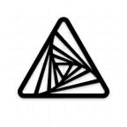

AFFiNE
 项目首页
项目首页 开源的一体化知识操作系统，用于组织和管理wiki、知识库、演示文稿等知识库的所有构建块，集成了AI功能，帮助用户在写作、绘图和演示方面提高效率。


 如何部署在线 AFFiNE
如何部署在线 AFFiNE
什么是 AFFiNE
- AFFiNE是一个开源的一体化工作区和操作系统，适用于构建知识库的所有构建块以及更多内容——wiki、知识管理、演示和数字资产。它是 Notion 和 Miro 的更好替代品。
功能列表
- 任何形式的块的真正画布。文档和白板现已完全合并。 许多编辑器应用都声称自己是生产力的画布，但 AFFiNE 是极少数允许您在无边画布上放置任何构建块的应用之一——富文本、便签、任何嵌入式网页、多视图数据库、链接页面、形状甚至幻灯片。我们拥有一切。
- 多模式 AI 合作伙伴随时准备投入任何工作撰写专业的工作报告？将大纲变成富有表现力且易于展示的幻灯片？将文章总结为结构良好的思维导图？整理您的工作计划和待办事项？或者...只需一个提示即可直接绘制和编码原型应用程序和网页？有了你，AFFiNE AI将您的创造力推向想象的边缘，就像Canvas AI生成思维导图以供头脑风暴一样。
- 本地优先、实时协作 AFFiNE提供了多人协作功能，你可以和团队成员实时编辑同一份笔记，这对于团队项目和共享知识库非常有用。
- 插件和扩展： AFFiNE有一个活跃的社区，提供了丰富的插件和扩展，可以根据你的需求定制软件的功能。例如，代码高亮、任务管理、日历集成等插件应有尽有。
- 离线模式： 即使在没有网络的情况下，AFFiNE也能正常工作。所有笔记会在恢复网络后自动同步，确保你的数据永远不会丢失。